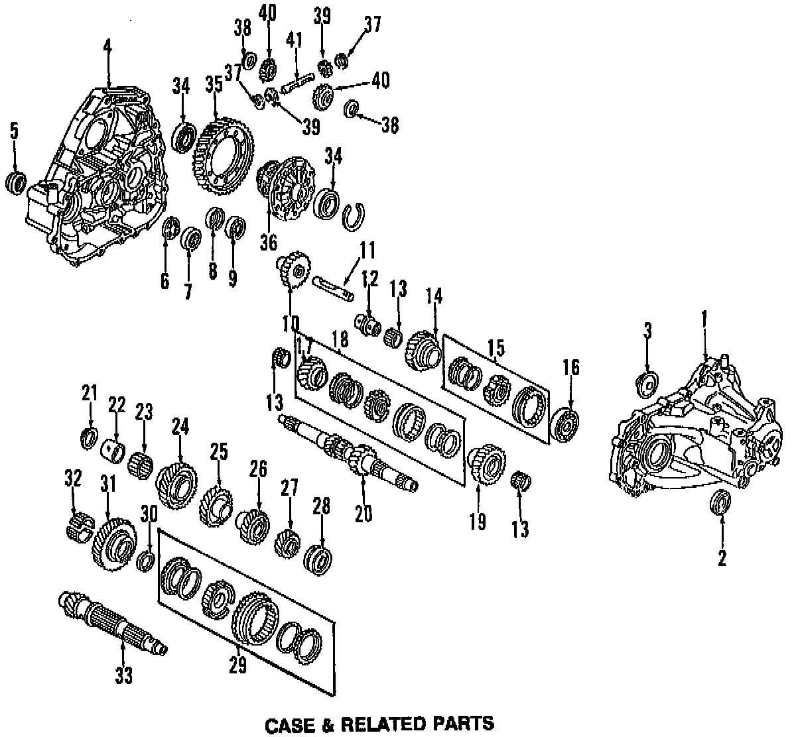

Operation CHARM
: Car repair manuals for everyone.
Home
>>
Acura
>>
1992
>>
Integra L4-1678cc 1.7L DOHC (VTEC) FI
>>
Parts and Labor
>>
Transmission and Drivetrain
>>
Manual Transmission/Transaxle
>>
Images
Images
Case & Related Parts:
